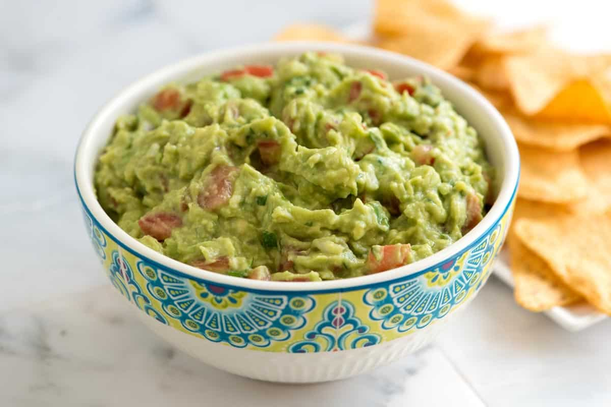

Simply Guacamole

Description
Mashed avocado mixed with chopped tomatoes and onion.
Ingredients
- 5 avocados - peeled, pitted, and mashed
- 2 tablespoons fresh lemon juice
- ¾ cup minced green onion
- ½ cup minced fresh cilantro
- salt and pepper, to taste
Steps
- Stir together the avocado and lemon juice in a serving bowl;
- Add the green onion and cilantro;
- Season with salt and pepper;
- Mix Well
-
Serve immediately or store covered in refrigerator with avocado pits in
the bowl to keep from browning!